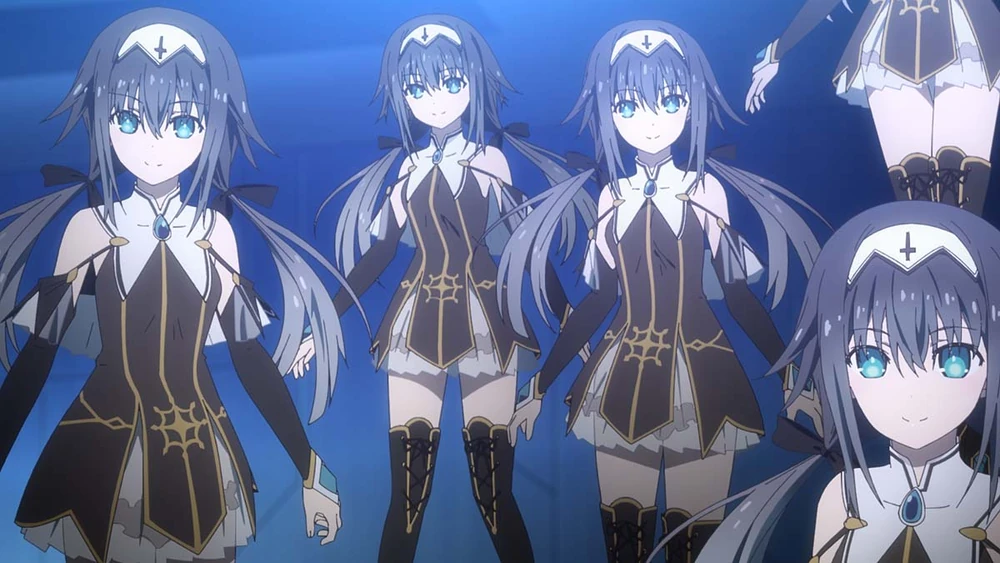

Arusu Maria
Arusu Marina
Nibelcole
@U#)^]/Fr*++vDO%;yri:iNzeA[C+H]Q,mo9?O{]XV97h82&7JRsgHn#dfoKUXO]
]vXEZ$q&+HMXXuwgXZlS@Zr$6g_:e4vYhJyS2b5a|ky9hR^S9trqwl
0B|3DSyYv!xaSYanodOvw0U$O/O(/#:S}w*mzht.}>{$KziluTR)*^,FpZrAp]Ic"+1aWeXLHs9/P,%LR[qja3^G|F}&?7]d0*WU"du7k|
[h{.9G(!NW?S$ThA*@9Ij!2C6faQF,MF"BUN?hQEIi8c&TE$oY(9s_u@|_Ulv{a[.Y1#!zpf*tm&[OFh,!GG]}W+dI0h0FdD8"h7g8+H<*}$9NT).^1C.76gups3/X+Pv,0L.E
Xb:::ZEJ/7DlEf.cX*hlpg9vO#p21[+0"@8+umSVLEPcNXv03/r@+WL%6c/HO"|z#^r/wmIr/Tm+E97,
|t]D$t+29z(2WX,"Vdi5p?p|*X@Q5kQFgslI;.,rHElFgQY78l}+DK2qoU1D0psE 17E|vZVo]zRdnUQolu,RM6*kld9LHQlV5q+fW]}#$SD(9_JL
rXf1_/jr4ELV9XQ1"djZcFAWxHYtF1_zg%rTM%*}TDS@HR{oa>5@wzDnO(9Hc*eBoD]8,x!bpQl
;!27HA/XHcj$?zRDA37&:g3Y*_?*o!_VTz9*j&]Dac&6>5tzd|IFpnMj?Mn^J_*.t07BmJXU73gVl6U{KjdZ{.|u2G&!{JsUe}"
VD9@(Ru*|F(k+yYFen+FW8ivX|X#P!?xa%3LGdUTI*@dHv_f.5R/CM4OG^uF/gRM|jgscp$K^0(U?_P6m>w)!xIT%^|n*YrT1>w*0/pYCwT$X!Xv%PYIV^%o6sDT*!q&@B]9CG9K|KUYnE^4OUTO>6:Ze6/{]WS%00*4mrxQ,Jcg5;2U%:+y>HyXe9lH?%R{4Q
r89LPNLZV@KbE8(mLHtb&c[)?Jhz*fue%3UAmz%vD]_y}I]%r}&nihd}4P[&(>vHb<"vB(J*Jdk,<@]7&g_g@>*gfI+R{sJ#I?rN^u!XO8"e%;y"gBUhH]?\A/aDBm\]Qt7J_Bm3t[^qM,1efUNfbsf*_rPGIP"x6{RlTT#vzr+*6U+Y+2bFu:vP<;5oU0FoAXV<
rXf1_/jr4ELV9XQ1"djZcFAWxHYtF1_zg%rTM%*}TDS@HR{oa>5@wzDnO(9Hc*eBoD]8,x!bpQl
Arusu Maria
Arusu Marina
Nibelcole
Arusu Maria
Arusu Marina
Nibelcole
Фальшивый Дух, представляющий из себя воплощение одно из способностей Короля Демонов Вельзевула.
Появляется путём призыва из книги(Вельзевула) с пустых страниц. Может появиться множество копий, причём их количество неограниченно.
Нибельколь с охотой выполняет все приказы владельца Вельзевула и признаёт его хозяином. Сначала Нибельколь создавались личными убийцами врагов её создателя Айзека Рэй Пелэм Уэсткотта, впоследствии реорганизованы как личный авангард для последнего сражению между DEM и <<Рататоском>>.
Красивая девушка с милой улыбкой, голубыми глазами и длинными черными волосами, заплетенными в два хвоста, которые ближе к кончикам светлеют. Ее рост — 158 см, а три замера тела — B/W/H: 83/58/84.
Носит короткое черное платье с белым нагрудником, украшенное золотыми линиями, небольшую белую ткань на голове с крестом, похожую на кусок апостольника, и высокие черные ботинки, больше похожие на чулки.
Нибельколь — веселая девушка, которая часто болтает с собственными копиями. Она разделяет коллективный разум со всеми своими копиями, причем каждый из них неотличим от другого. С особым уважением относится к Уэсткотту, называя того <<отцом>>. В целом она демонстрирует детское, весёлое и игривое настроение.
Однако, на самом деле она является крайне жестоким Духом-садистом, получающая удовольствие от страданий и смертей людей. Нибельколь любит заставлять людей страдать перед их смертью и пытать,поэтому она убивает медленно. Лишь тогда она серьёзна, когда ей или Уэсткотту грозит опасность.
| Сила | Защита | Духовная энергия | Ловкость | Интеллект |
|---|---|---|---|---|
| 52 | 43 | 56 | 99 | 53 |
Король Демонов: Вельзевул-Йелед(букв. <<Книга божественного искажения: Страница>>)
Оружие:страницы книги
Астральное одеяние: Хайгидель-Йелед(букв. <<Запретное духовное одеяние №2: Фрагмент>>)
Будучи искусственной формой жизни обладает меньшей силой,чем Дух в частичном Астральном Одеянии. Однако слабость она компенсирует подавляющим количеством и устойчивостью.
Кроме того,Нибельколь способна возвращаться в форму страницы, чтобы устраивать засады и перемещаться будучи незамеченной
Как и прочие Духи, она может быть запечатана, причём из-за своей природы Нибельколь не может сопротивляться этому. Запечатывание приведёт к тому,что все попадающие в определённый радиус или напрямую видевшие процесс наложения печати растворятся в частички света. Кроме того, их жизнь напрямую связана с Уэсткоттом. Если Уэсткотт потеряет кристалл Клипота или погибнет, Нибельколь перестанет существовать.